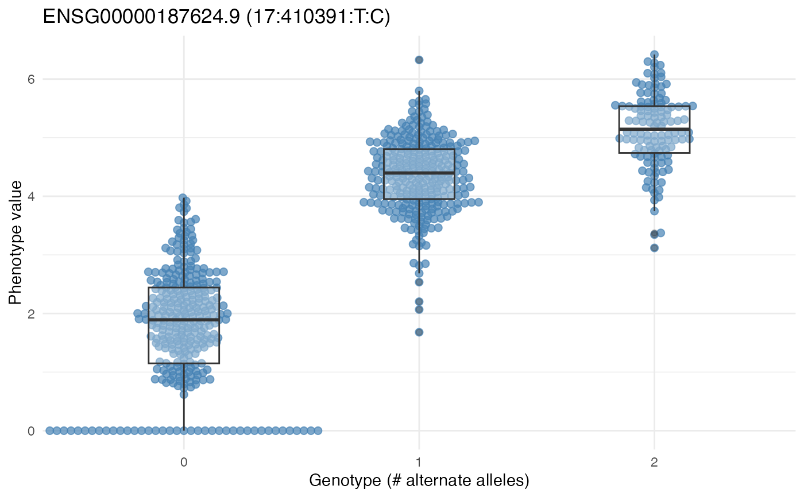

Creates a beeswarm plot comparing a phenotype across genotype groups (0, 1, 2 copies of the alternate allele) for a given SNP. Useful for visualizing the effect of a significant eQTL variant.
Usage
plotGenotypeEffect(
x,
snp_id,
phenotype_id,
assayName = NULL,
size = 2,
color = "steelblue",
title = NULL
)Arguments
- x
- snp_id
Character. SNP identifier (row name in
variantRanges(x)).- phenotype_id
Character. Phenotype/gene identifier (row name in
rowRanges(x)).- assayName
Name of the assay to use. Defaults to the first assay.
- size
Point size for beeswarm. Default 2.
- color
Color for points. Default "steelblue".
- title
Main plot title. If
NULL, auto-generated from SNP and gene.
Examples
data(mageSEfilt, package="CSHLvc2026")
plink_paths <- cache_mage_chr17_plink()
#> [ cache hit ] CCDG_mage_chr17.fam
#> [ cache hit ] CCDG_mage_chr17.bim
#> [ cache hit ] CCDG_mage_chr17.bed
#> [ validate ] Checking .bed magic bytes ...
#> [ validate ] .bed magic bytes OK.
plpre <- tools::file_path_sans_ext(plink_paths[["bed"]])
cd <- as.data.frame(colData(mageSEfilt))
mm <- model.matrix(~ batch + population + sex, data = cd)
mm <- mm[, -1, drop = FALSE] # remove (Intercept)
tqe <- tQTLExperimentFromRSE(
se = mageSEfilt,
plinkPrefix = plpre,
covariateMatrix = mm,
genome = "hg38"
)
#> Extracting number of samples and rownames from CCDG_mage_chr17.fam...
#> Extracting number of variants and colnames from CCDG_mage_chr17.bim...
plotGenotypeEffect(tqe, "17:410391:T:C", "ENSG00000187624.9")
